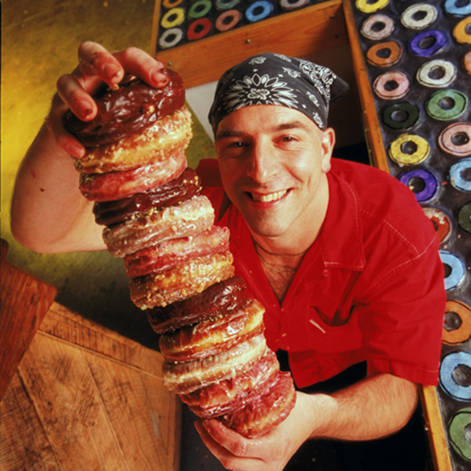
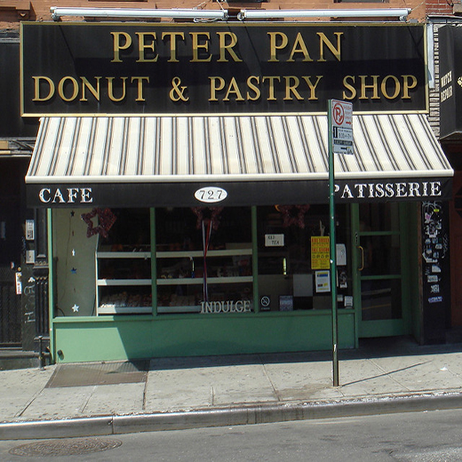
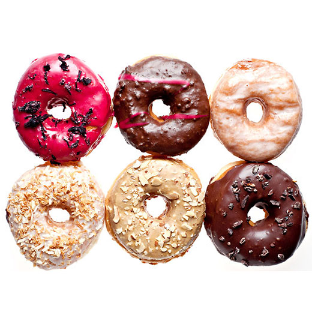

Articles about Donut Shops

Mark Israel
He is the owner of Doughnut Plant, Doughnut Plant. Message from Make, the mission and passion is providing our customers with the best doughnuts in the world every day using the finest ingredients available. And that’s not done alone.I could not have done anything without the help of my father, who from the beginning (of me! and of Doughnut Plant) has always been there with love to help and support. The Doughnut Plant is named in the memory of my mother, who gave me everything, and passed away in 1992: Every day when she would see my father off to work, she would say “Have a good day at the Plant.” My grandfather died when I was three, but I have made a relationship with him through his doughnut recipe and all that I went through at the bakery, understanding he too went through some of the same experiences. Thank you to all the devoted Doughnut Plant customers, my friends and to everyone who had any part along the way, and especially our employees who have stayed by me and believed in Doughnut Plant. I will do my best to make the doughnuts at Doughnut Plant always increasing in their deliciousness.

Peter Pan Donut & Pastry Shop
“Are you in line?” customers kept asking, waddling into a mass of puffy winter coats. On a recent Saturday at Peter Pan Donut & Pastry Shop, the whole store was a line.
Waitresses in mint-green smocks with pink collars and cuffs dodged one another’s elbows as they reached for classic varieties — glazed, with or without sprinkles, cream-filled or coconut — selling for $1.10 apiece.Bakers had arrived at 1 a.m., and the shop opened at 5, catering to customers on either the very late or the very early shift. By afternoon, the trays of red velvet doughnuts were picked clean. Amanda Noa, 33, was among the crowd waiting to be served. If her first choice was gone by the time she reached the counter, she had a backup plan: “I just ask for whatever’s warm.”Peter Pan is a retro holdout on a stretch of Manhattan Avenue in Greenpoint where Brooklyn Industries and the sleek coffee chain Konditori have opened outposts in recent years. The shop dates to the 1950s, and the current owners, Donna Siafakas, 58, and her husband, Christos, purchased it in 1993 after meeting in a doughnut shop in Queens. (She was a waitress; he was a baker.)

A Flowering of the Doughnut Art
IN “The Donut Chef,” a children’s book by Bob Staake, two bakers on one block compete by dreaming up increasingly outlandish pastries: “Their donuts were such crazy things! Some were square and some were starry. Some looked just like calamari.” Soon the townspeople can’t remember when doughnuts were round and covered with glaze.With a clutch of enterprising shops opening in the last few months, New York is living through a similar flowering in the doughnut arts. Although squid has not wrapped its tentacles around our pastries yet, if you want hibiscus, or salted caramel, or passion fruit, this is your city.Most bakers attempt fluency in the two major doughnut languages, cake and yeast. Dough, 305 Franklin Avenue (Lafayette Avenue), Bedford-Stuyvesant, Brooklyn, (347) 533-7544, a modest little shop with a handmade feel, sticks to yeast, the better to fool around with clever new glazes: dulce de leche with toasted almonds, chocolate with cacao nibs, a vivid magenta hibiscus with hibiscus flowers.
{kind=link}
{kind=link}
{kind=link}
{kind=link}
{kind=link}